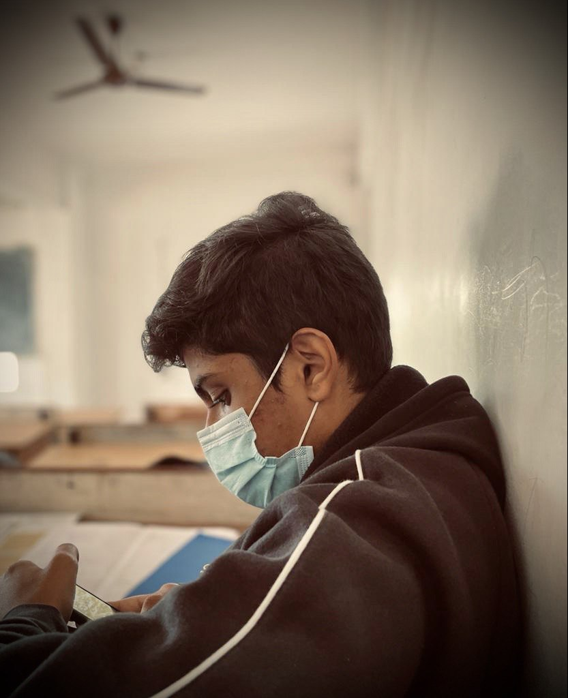

Who Are We?
Launched in 2010, Our technology platform connects customers, restaurant partners and delivery partners, serving their multiple needs. Customers use our platform to search and discover restaurants, read and write customer generated reviews and view and upload photos, order food delivery, book a table and make payments while dining-out at restaurants. On the other hand, we provide restaurant partners with industry-specific marketing tools which enable them to engage and acquire customers to grow their business while also providing a reliable and efficient last mile delivery service. We also operate a one-stop procurement solution, Hyperpure, which supplies high quality ingredients and kitchen products to restaurant partners. We also provide our delivery partners with transparent and flexible earning opportunities.
Glimpses of life at Delish
People at the Delish having a Delicious time..
Pankaj Barad (Founder,CEO)
Pankaj is the founder and CEO of Delish. Butter chicken with naan is his greatest weakness and his favourite words are focus and now.

Faizan Khan (CTO)
Faizan was the second person to join Delish and is currently the Chief Technology Officer. He is foodish by nature and makes sure everything works fine on the tech end.
Charan Prasad (CFO)
Charan is the Chief Financial Officer at Delish. Crispy Chicken Roll From Alamanh is his favourite food, And he is also a Picky Eater Among the group.